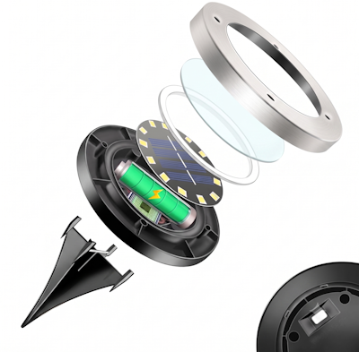
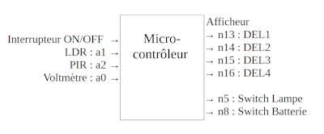
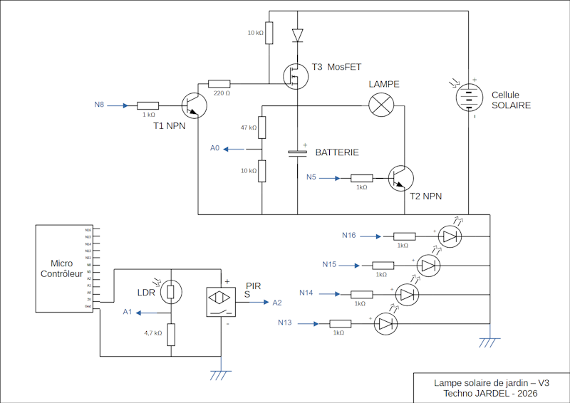
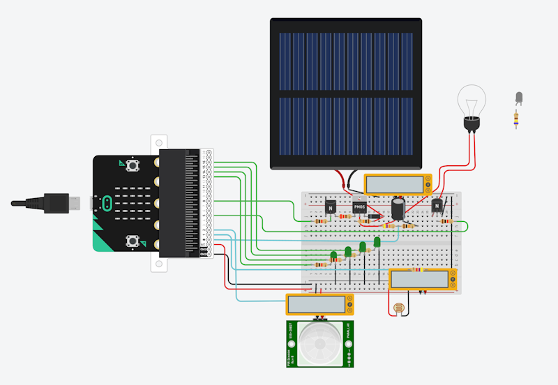
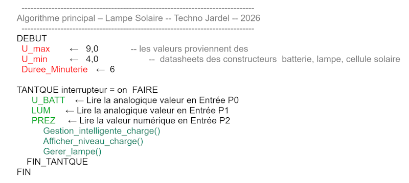
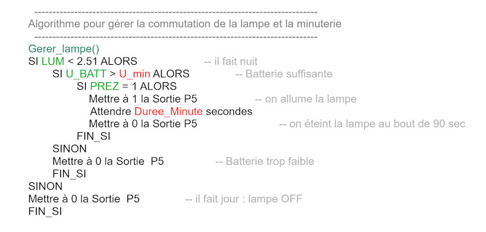
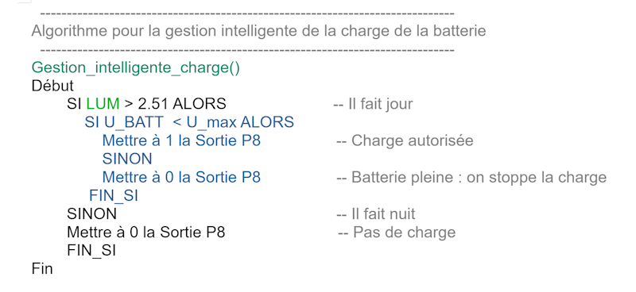
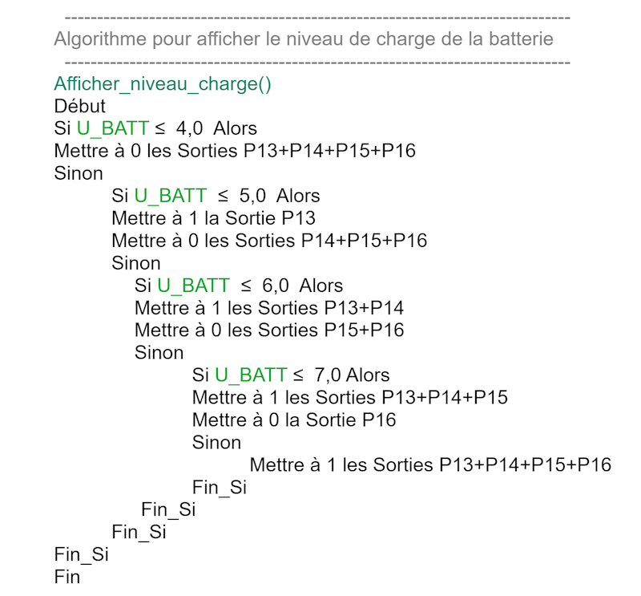
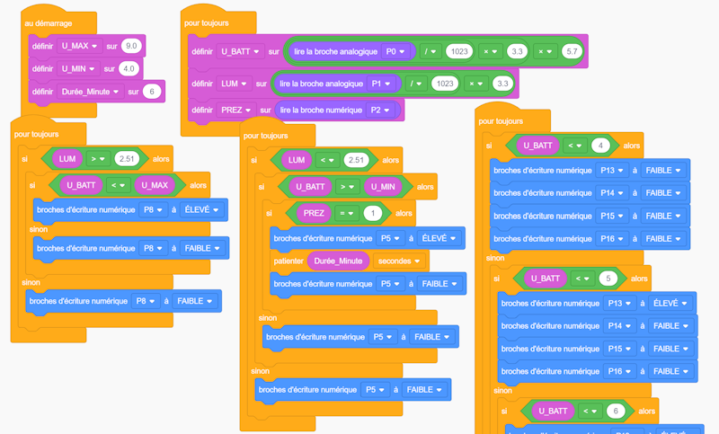

La lampe solaire de jardin

A. L’objet programmable étudié
Partons d’exemple concret : une lampe solaire de jardin programmée : elle doit gérer l’énergie de sa batterie et l’éclairage de manière efficace, son micro-contrôleur va utiliser les entrées/sorties suivantes :

B. Le schéma de principe1. Alimenter.
Une cellule solaire 16V alimente un condensateur 9V. Une carte microbit permet de gérer le circuit. N8 sortie numérique pour commander le transistor T1 : il commute T3 et donc la batterie sur la cellule solaire. A0 entrée analogique pour récupérer la valeur de la tension du condensateur par l’intermédiaire d’un pont diviseur.2. Détecter la luminosité.
Une LDR voit sa résistance diminuer lorsque la lumière augmente, or nous préférons la logique inverse, on va donc mesurer la tension du résistor en série, et envoyer ça sur A1.3. Commuter la lampe.
N5 sortie numérique pour commander le transistor T2 : il commute la lampe sur la batterie.4. Indiquer le niveau de charge.
N13-14-15-16 sortie numérique pour commander respectivement les DEL 1-2-3-4 qui indiquent le niveau de charge de la batterie.
C. Simulation électronique avec TinkerCAD
https://www.tinkercad.com/joinclass/AG6JN4TUB
Inscrit toi avec un nom d’étudiant : eleve01 / eleve02 / eleve03 / … Accéder à ma classe Classes / 2nde SNT / Lampe Solaire de Jardin 3 / Copier et éditer / Manipulez le modèle et répondez aux questions :
Q1.- Démarrez la simulation, mettez la LDR sur lumière max : que se passe-t-il avec la batterie ? Que font les Dels D1-D2-D3-D4 ?
Q2.- Un nuage passe, la cellule solaire ne voit plus de lumière, quelle est la conséquence sur le système ?
Q3 - Après avoir chargé la batterie le système s’arrête automatiquement, quelle est la tension sur la batterie ?
Q4.- Repérez dans le programme la ligne où on veille à ce que U_BATT reste inférieur à U_max.
Q5.- Repérez dans le programme la ligne où on déclare la constante U_max, et mettez une valeur qui dépasse la capacité de cette batterie, que se passe -t-il ? (lorsque vous avez vu, pensez à remettre la valeur U_max d’origine)
Q6.- En fonctionnement normal, la batterie se charge le jour, puis la nuit vient, mettez les capteurs de lumière au mini. Si le PIR détecte un mouvement, que se passe-t-il ?
Q7.- La lampe s’éteint au bout de quel délai ? Peut-on faire de nombreux cyles d’éclairage ?
Q8.- Repérez dans le programme la ligne ou on déclare cette valeur de délai. Renommez cette variable en Duree_Secondes et mettez une valeur de 8
Q9.- La Batterie se décharge vite avec une lampe à incandescence, remplacez-la par une Diode Blanche. Quelle(s) différence(s) pouvez-vous observer ?
D. ProgrammationLUM est la variable numérique liée à la luminosité ambiante (c’est la valeur qui rentre en P1) Or, le microcontrôleur Micro:bit possède un convertisseur analogique-numérique (CAN) de 10 bits et on sait que 2^10 = 1023.
Le CAN traduit une tension physique en un nombre entier sur une certaine plage d’utilisation et 3.3 Volt (le maximum) correspond à 1023 (le maximum)
bits Volts 1023 3.3 P1 LUM = ? Produit en croix :
LUM = P1 * 3.3 / 1023 = ( P1 / 1023 ) * 3.3
De la même manière U_BATT est la variable numérique liée à la tension du condensateur sur un pont diviseur (valeur qui rentre sur P0 ) Le produit en croix nous donne :
U_BATT = (P0 / 1023) * 3.3 *5.7




Pour aller plus loin : l’instruction « Attendre Duree_Minute secondes » n’est pas concidérée comme une bonne pratique en programmation. Elle bloque le système alors que des événements extérieurs pourraient advenir. En effet, si une 2eme personne vient alors que la lampe a déjà commencé son cycle d’éclairage alors elle ne sera pas détectée. La minuterie coupera la lumière comme si la 2eme personne n’était pas là. Solution : Il faut utiliser un chronomètre asynchrone réarmable… relevez le défi et installez cette fonction dans la lampe de jardin.
